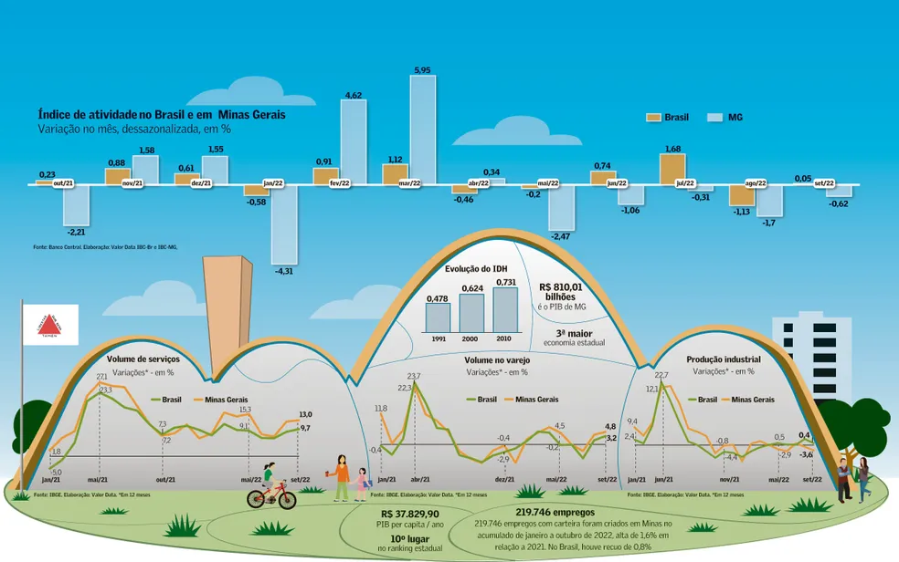
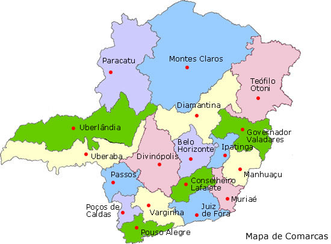
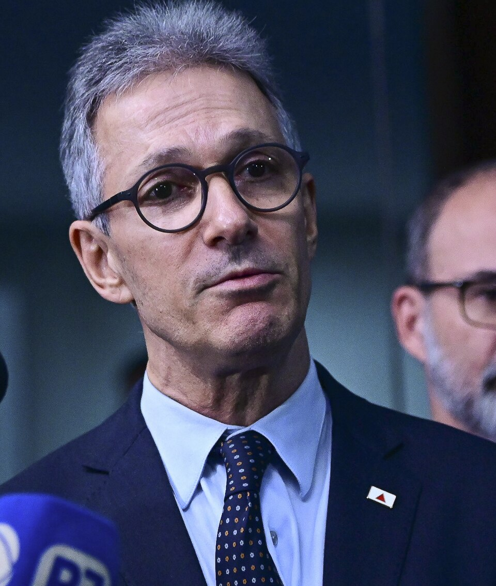

.jpg)
Economia A economia de Minas Gerais é robusta e multifacetada, com crescimento contínuo em vários segmentos. Em 2023, o PIB do estado superou R$ 1 trilhão, com destaque para a agropecuária (crescimento de 11,5 %), indústria (3,1 %) e serviços (2,2 %) Desenvolvimento MG . No primeiro trimestre de 2024, a economia mineira cresceu 2,9 % em relação ao mesmo período de 2023, ultrapassando a média nacional de 2,5 %, e o PIB estadual naquele trimestre atingiu R$ 253,8 bilhões, representando cerca de 9,4 % da riqueza nacional Agência Minas . A mineração (ferro, nióbio etc.), a produção de energia solar (Minas já tem mais de 7 GW instalados), e o agronegócio – especialmente o café – são pilares estratégicos do crescimento Desenvolvimento MG Brasil Escola bdmg.mg.gov.br.

População Segundo o Censo de 2022 do IBGE, Minas Gerais tem cerca de 20,54 milhões de habitantes, sendo o segundo estado mais populoso do Brasil Reddit . As dez cidades mais populosas incluem, pela ordem: Belo Horizonte (2,315 milhões), Uberlândia, Contagem, Juiz de Fora, Montes Claros, Betim, Uberaba, Ribeirão das Neves, Governador Valadares e Divinópolis . Projeções da Fundação João Pinheiro indicam que o estado atingirá seu pico demográfico por volta de 2037, com 21,9 milhões de habitantes, passando depois a apresentar um ligeiro declínio até 2047 Estado de Minas fjp.mg.gov.br.
Principais cidades Belo Horizonte é a capital e centro político, econômico e cultural do estado. A Região Metropolitana de BH (RMBH) tem um PIB que, em 2021, alcançou cerca de R$ 294,6 bilhões — quarto maior do país e maior do que o PIB de vários países e de alguns estados — e representa 34,4 % do PIB de Minas . Betim e Contagem concentram forte atividade industrial, com fábricas como a da Fiat e fornecedores automotivos, além de serem pólos importantes em mineração. Outras cidades relevantes incluem Uberlândia e Uberaba (Triângulo Mineiro, forte no agronegócio), Juiz de Fora (importante pólo universitário e industrial), Montes Claros e Governador Valadares (centros regionais em expansão) .

Governo atual O governador de Minas Gerais desde 2019 é Romeu Zema, reeleito em primeiro turno em 2022 e no exercício de seu segundo mandato (2023–2026) Wikipédia Agência Minas Wikipedia . Seu vice-governador é Mateus Simões, que assumiu o cargo em janeiro de 2023 . O governo Zema tem priorizado a retomada da saúde fiscal e investimentos públicos; em 2024, por exemplo, entregou mais de 1 milhão de cirurgias eletivas e reduziu a distância percorrida por pacientes em hemodiálise em 60 %, além de impulsionar a educação técnica e melhorar o desempenho no Enem Assembleia Legislativa de Minas Gerais . No campo político, Zema tem metas ambiciosas: planeja sair do governo em março de 2026 para se preparar para uma eventual candidatura presidencial

Elaborado por João Francisco Higino ferraz